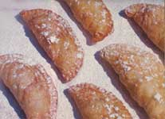
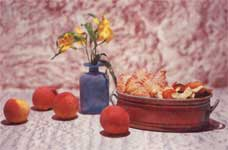

AMERICAN COUNTRY EXCERPT
Strange but true - an uncanny tale from Kathrynn T. Windham, storyteller.
My Aunt Bet never thought there was anything unusual about having a tombstone in her kitchen.
Now I don't suppose Aunt Bet ever planned to have one in her kitchen, but when she was walking home to dinner one noon, she happened to notice a tombstone leaning against the wall of the depot, right outside the telegrapher's office. Before many days had passed, that tombstone was lying on her kitchen counter.
Aunt Bet was postmaster (she scorned the word postmistress , considering it insulting) in Thomasville, Alabama, and she made two round trips daily from her house on top of the ridge down to West Front Street, where the post office was. She went down the hill early in the morning to open the post office, back up the hill after dark when the mail from the southbound train had been distributed into the rows of lock boxes in the lobby, and she made a trip back and forth in the middle of the day for dinner. She always walked, said it was wasteful to drive the five blocks between home and the post office. Besides, she pointed out, you always saw more if you walked.
As I said, it was on her way up the hill to dinner one noon, just as she was crossing the railroad tracks, that she first saw the tombstone.
Aunt Bet walked over to examine the marble slab, and she was somewhat surprised that she did not recognize the name engraved on it. She, being postmaster and an officer in the Eastern Star and a member of the United Daughters of the Confederacy, knew nearly everybody in our county and most of the folks in the counties that touched ours. The depot was closed for dinner, so there wasn't anybody around to answer her questions.
She walked up the hill, wondering about the marker and remembering its decorations: the doves, roses, acanthus leaves, lilies, scrolls and curlicues engraved by some unknown artisan. Aunt Bet never failed to notice and to admire fine craftsmanship.
While we were eating dinner, Aunt Bet told about the tombstone, and we all put our heads to thinking whose it could be. Mother said the deceased could not have been a Methodist, because she had never seen that name in the list of obituaries The Methodist Christian Advocate ran each week, and Daddy said he knew some folks by that name down in the lower end of the county, but they were a kind of sorry lot and he didn't believe any of them could afford a fancy grave marker such as the one Aunt Bet described. There were several comments about "some poor soul lying in an unmarked grave" before the conversation turned to other topics.
I kept thinking about that tombstone all the time I was waiting for my rice pudding to get cool enough to eat. "Heat will cool if greed will wait," Mother reminded me when she noticed me blowing on a spoonful of the dessert.
As soon as I had finished my pudding and had been excused from the table, I hurried down to the depot to see that tombstone for myself. It was just like Aunt Bet had described it, with a wreath of roses and leaves encircling the name and dates that identified the deceased, and doves and lilies across the top and down the sides.
I squatted down to read the inscription near the bottom. "Not Dead But Sleeping," it said. That inscription bothered me. It still does. I meant to ask Daddy what those words really meant, but when I saw him at suppertime, my mind was on other things, and I had forgotten about the tombstone.
A few days later, Aunt Bet telephoned from the post office to say, "Alf is bringing something up there in his dray. Please holler to Grover down in the bottom and ask him to come help Alf put it on the kitchen counter." She hung up before I could get around to asking her what Alf was bringing.
So I walked out in the back yard and called Grover, and he and I waited at the gate until Alf arrived in his horse-drawn cart.
"Glad you're here," Alf said to Grover. "I need a strong man to help me unload the tombstone."
"What?" Grover asked.
"Tombstone," Alf replied. "It's heavy."
Grover didn't say anything.
Alf tied his horse to the fence, and the two men hefted the marble slab out of the dray and toted it through the yard, across the back porch and into the kitchen. I held the screen door open for them. They eased the stone onto the counter, rubbed the palms of their hands up and down on their pants legs, sort of wiping away the feel of the thing, I suppose, and then they walked out to the street.
So that's how the tombstone came to Aunt Bet's kitchen.
Usually it was turned face down, its smooth side up, and was used for rolling out biscuit dough, chopping fresh vegetables, slicing meats or kneading fondant.
On those occasions when Aunt Bet was doing fancy cooking, decorating wedding cakes or making candy mints for the Research Club meeting and such, the tombstone was turned face up so the soft icing or candy could be pressed into the stone roses, leaves and doves. No telling how many wedding cakes Aunt Bet created with garlands of roses circling the layers and sugary doves hovering in acanthus leaves. Her embossed mints and bonbons were envied by every hostess in town.
"Oh, Miss Bettie, how in the world do you decorate your cakes so beautifully? Those doves and flowers and all are perfect! And your fancy mints! Will you, please ma'am, tell me how to do it?" aspiring culinary decorators often asked.
"Well," Aunt Bet would reply, "first you find a tombstone." Then, if she liked the suppliant, she'd part with a few recipes.
2 cups flour 4 teaspoons baking powder 2 teaspoons sugar 1/4 teaspoon salt 1/2 cup shortening 2/3 cup milk 1 beaten egg
Sift dry ingredients together. Cut in shortening until mixture resembles coarse crumbs. Combine milk and egg and add to mixture; stir with fork to mix. Knead gently on floured tombstone (plain side), roll out 3/4 inch thick, cut, and bake on ungreased baking sheet at 450°F about 12 minutes, or until lightly browned. Waste no time getting biscuits to folks at the dining table, and have plenty of butter and homemade preserves waiting.
1 cup flour 3 teaspoons baking powder 2/3 teaspoon salt 4 tablespoons shortening 1 cup cooked sweet potatoes (mashed) 1/2 cup milk - maybe a little more
Cut shortening into flour, salt and baking powder which have been sifted together. Stir in sweet potatoes and add enough milk to make a dough stiff enough to roll. Roll on floured tombstone and cut with biscuit cutter. Bake at 400° for about 25 minutes.
1 box powdered sugar 5 tablespoons butter 2 tablespoons half-and-half 12 drops oil of peppermint Food coloring
Let butter soften. Combine all ingredients and roll into balls the size of walnuts. Press each ball gently into dainty designs on tombstone so that imprint is left on each.
Grandma's Tea Cakes
1 cup sugar 1 cup butter 3 eggs 3 1/2 cups flour 1 teaspoon vanilla
Cream sugar and butter. Add eggs, beating well after each addition. Put in flavoring and add flour to make a stiff dough. Roll thin, cut with big biscuit cutter, and bake at 350° about 10 minutes.
Old-Timey Fried Pies
2 cups sifted flour 3 teaspoons baking powder 1/2 teaspoon salt 1/3 cup shortening 2/3 cup cold milk Stewed dried fruit
Sift dry ingredients together and cut shortening into dry mixture. Gradually mix in milk. Roll out on floured tombstone (plain side) and cut into 4-inch circles (a small saucer is helpful as a cutting guide). Spoon 1 1/2 tablespoons of stewed fruit on half of each circle and fold other half over it. Press edges together and seal with tines of fork. Prick tops and fry in oil in deep skillet, turning as each side browns. Drain on paper towels. Sprinkle with sugar. Serve hot.
2 cups sugar 1 cup corn syrup 1/2 cup water 1 teaspoon salt 2 tablespoons butter 2 cups raw peanuts 2 teaspoons vanilla 1 1/2 teaspoons baking soda
Mix sugar, syrup, water and salt and bring to boil. Cover and boil 3 minutes. Remove cover and boil to hard ball stage. Add butter and peanuts and cook until peanuts pop and crackle. Remove from heat and quickly stir in soda and vanilla. Pour out on greased tombstone. When set, slip knife under edge, turn it over, and break into pieces.
2/3 cup butter 1 1/4 cups sugar 2 eggs 3 cups flour 1 1/2 teaspoons salt 2 teaspoons baking powder Juice of 1 orange Grated rind of 2 oranges
Cream butter and sugar. Add eggs one at a time, beating after each one. Sift dry ingredients together and add to creamed mixture. Mix in juice and rind. Chill. Roll thin and cut with small, round cutter. Bake on greased cookie sheet at 400° until brown.
3 cups sugar 1/4 cup vinegar 2 tablespoons butter 1/2 cup water
Mix and cook slowly until test drops are brittle when dropped in cold water. Do not stir while cooking. Pour out on cold, buttered tombstone. When candy is cool enough to handle, butter fingers and thumbs well (might as well butter whole hands!), take up part of candy, and pull it with long, firm strokes until it becomes porous and light colored. Put ropes of pulled candy on buttered tombstone or plate until it is cool and hard. Cut or break into pieces.
1 cup vegetable shortening 1/2 cup boiling water 3 cups flour 1/2 teaspoon baking powder 1/2 teaspoon salt
Put shortening and boiling water in bowl over hot water until shortening melts. Then add flour, baking powder and salt. Mix well and beat with fork until creamy. Let cool. Roll thin on floured tombstone.
4 cups flour 1 cup light brown sugar 1 pound butter
Cut room-temperature butter into sugar and flour which have been sifted together. Mix (you'll probably have to use your hands) until firm. Roll out about 3/4 inch thick. Cut into fancy shapes, if desired. Bake on cookie sheet at 325° for 20 minutes.
1/2 cup butter 2 cups brown sugar 4 egg yolks 2 tablespoons flour 1/2 nutmeg, grated Pinch salt 1 teaspoon cinnamon 1 cup cream 1/2 cup chopped dates 1/2 cup raisins 1/2 cup broken pecan meats 1 unbaked pie shell (Ada's recipe)
Cream butter and sugar together well. Add egg yolks one at a time, beating after each addition. Sift flour and spices together and blend into egg mixture, stirring until smooth. Gradually blend in cream and stir in dates, raisins and nuts. Pour into pie crust and bake at 300° for 40 minutes. Top with meringue (made with 4 egg whites and 1/2 cup sugar) or with whipped cream flavored with sherry.
2 tablespoons butter 1/2 cup sugar 3 tablespoons flour 2 teaspoons ground cinnamon 1/2 teaspoon ground cloves 1/2 teaspoon ground allspice 1 egg 2 tablespoons vinegar 1 cup water 1 unbaked pie shell (Ada's recipe)
Cream butter and sugar. Sift flour and spices together and add to mixture. Add vinegar, egg and water. Place in top of double boiler and cook until thick, stirring often. While filling is cooking, let pie shell bake in oven about 5 minutes at 350°. Pour filling into partially baked shell and bake at 350° until filling is set and light brown.
RECIPES REPRINTED FROM TREASURED ALABAMA RECIPES, © 1967 BY KATHRYN TUCKER WINDHAM.
|
 Pastries inscribed from stone. |
 |
|